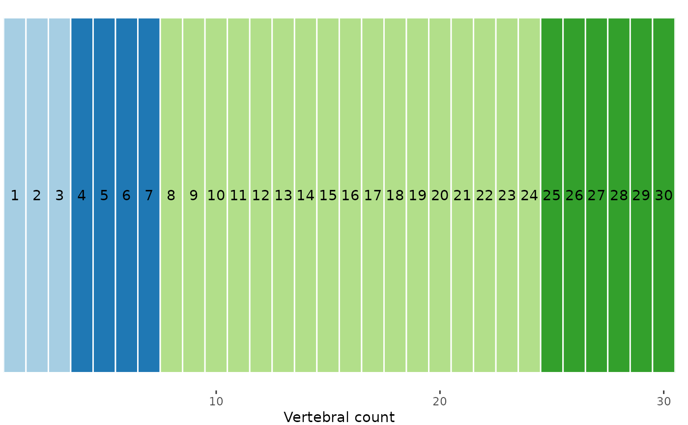
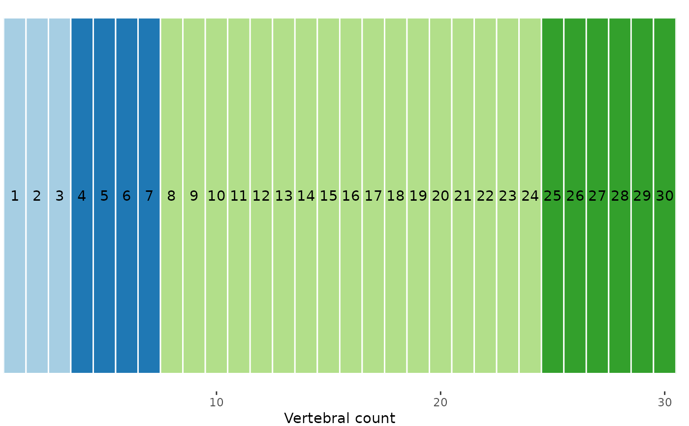

simregions() simulates vertebrae and PCOs that satisfy certain constraints.
Usage
simregions(
nvert,
nregions,
nvar = 1,
r2 = 0.95,
minvert = 3,
cont = TRUE,
sl.dif = 0
)
# S3 method for class 'regions_sim'
plot(x, scores = 1, lines = TRUE, ...)Arguments
- nvert
numeric; the number of vertebrae for which to simulate data.- nregions
numeric; the desired number of regions in the simulated data.- nvar
numeric; the number of PCO axes to simulate. Default is 1.- r2
numeric; a vector containing the \(R^2\) of the true segmented regression model for each simulated PCO. If a single value is supplied, all PCOs will receive that value. Otherwise, one value should be supplied for each simulated PCO.- minvert
numeric; the minimum number of vertebrae allowed in each region. Default is 3.- cont
logical; whether to use models that are continuous (TRUE) or discontinuous (FALSE) at the breakpoints to generate the data. Default isTRUE.- sl.dif
numeric; the minimum required difference in slopes between adjacent regions, expressed as a proportion of the maximal difference between allowable slopes. Must be between 0 and 1. See Details.- x
a
regions_simobject.- scores
numeric; for which simulated PCO scores the simulated values should be plotted.- lines
logical; whether to display the simulated regression lines on the plot. Default isTRUE.- ...
ignored.
Value
simregions() returns a regions_sim object, which contains the vertebra indices in the Xvar entry, the PCO scores in the Yvar entry, the simulated breakpoints in the BPs entry, the simulated model coefficients in the coefs entry, and the simulated error standard deviation in the ersd entry. The attribute "design" contains the design matrix, which when multiplied by the coefficients and added to a random normal variate with standard deviation equal to the error standard deviation yields the observed PCO scores.
plot() returns a ggplot object that can be manipulated using ggplot2 syntax. The plot is similar to that produced by plot.regions_pco() and to that produced by plotsegreg() except that the displayed lines (if requested) are the true rather than fitted regression lines.
Details
simregions() generates PCO scores for each requested vertebra such that certain conditions are met. The slopes for each region are drawn from a uniform distribution with limits of -.5 and .5. If a set of slopes contains two adjacent slopes that have a difference less than sl.dif, it is rejected and a new one is drawn. The scaling of the PCOs is determined by the slopes and the requested \(R^2\). The PCOs will not necessarily be in order from most variable to least variable as they are in a traditional PCO analysis.
Intercepts (the intercept of the first region when cont = TRUE and the intercept of all regions when cont = FALSE) are drawn from a uniform distribution with limits of \(-n/4\) and \(n/4\), where \(n\) is the number of breakpoints, one less than nregions. Intercepts other than the first when cont = TRUE are determined by the slopes.
The cont, r2, and sl.dif arguments control how easy it is for fitted segmented regression models to capture the true structure. When cont = TRUE, it can be harder to determine exactly where regions begin and end, especially if sl.dif is 0. When r2 is high, there is little variation around the true line, so the fitted lines will be more precise and region boundaries clearer. When sl.dif is high, slopes of adjacent regions are different from each other, so it is easier to detect region boundaries. Setting sl.dif to between .5 and 1 ensures that the slopes in adjacent regions have different signs.
See also
calcregions() for fitting segmented regression models to the simulated data; calcmodel() for fitting a single segmented regression model to the simulated data; plotsegreg() for plotting estimated regression lines.
Examples
# Simulate 40 vertebra, 4 regions (3 breakpoints), 3 PCOs,
# true model R2 of .9, continuous
set.seed(11)
sim <- simregions(nvert = 30, nregions = 4, nvar = 3, r2 = .95,
minvert = 3, cont = TRUE)
sim
#> A `regions_sim` object
#> - number of vertebrae: 30
#> - number of regions: 4
#> - breakpoints: 3, 7, 24
#> - model type: continuous
#> - number of PCO scores: 3
#> Use `plot()` to display the true lines and simulated data.
# Plot the true data-generating lines and breakpoints
plot(sim, scores = 1:3)
 # Run segmented regression models on simulated data,
# up to 6 regions
simresults <- calcregions(sim, scores = 1:3, noregions = 6,
minvert = 3, cont = TRUE,
verbose = FALSE)
summary(simresults)
#> Regions Possible Tested Saved Comp. method Saving method
#> 1 1 1 1 Exhaustive All
#> 2 25 25 25 Exhaustive All
#> 3 253 253 253 Exhaustive All
#> 4 1330 1330 1330 Exhaustive All
#> 5 3876 3876 3876 Exhaustive All
#> 6 6188 6188 6188 Exhaustive All
# Select best model for each number of regions
(simmodels <- modelselect(simresults))
#> Regions BP 1 BP 2 BP 3 BP 4 BP 5 sumRSS RSS.1 RSS.2 RSS.3
#> 1 . . . . . 103.818 15.576 46.803 41.439
#> 2 6 . . . . 73.800 13.871 30.766 29.163
#> 3 7 24 . . . 49.234 11.091 8.652 29.491
#> 4 3 6 24 . . 46.607 9.202 8.568 28.836
#> 5 7 16 19 24 . 43.835 10.941 8.515 24.380
#> 6 3 6 16 19 24 41.046 9.077 8.291 23.679
# Evaluate support for each model and rank models
(simsupp <- modelsupport(simmodels))
#> - Model support (AICc)
#> Regions BP 1 BP 2 BP 3 BP 4 BP 5 sumRSS AICc deltaAIC model_lik Ak_weight
#> 3 7 24 . . . 49.234 -20.691 0.000 1.000 0.972
#> 4 3 6 24 . . 46.607 -13.592 7.099 0.029 0.028
#> 5 7 16 19 24 . 43.835 -5.639 15.052 0.001 0.001
#> 6 3 6 16 19 24 41.046 3.626 24.317 0.000 0.000
#> 2 6 . . . . 73.800 4.925 25.615 0.000 0.000
#> 1 . . . . . 103.818 25.867 46.558 0.000 0.000
#> Region score: 3.03
#>
#> - Model support (BIC)
#> Regions BP 1 BP 2 BP 3 BP 4 BP 5 sumRSS BIC deltaBIC model_lik BIC_weight
#> 3 7 24 . . . 49.234 8.707 0.000 1.000 0.998
#> 4 3 6 24 . . 46.607 21.771 13.064 0.001 0.001
#> 2 6 . . . . 73.800 27.138 18.431 0.000 0.000
#> 5 7 16 19 24 . 43.835 34.253 25.546 0.000 0.000
#> 1 . . . . . 103.818 39.854 31.147 0.000 0.000
#> 6 3 6 16 19 24 41.046 46.336 37.629 0.000 0.000
#> Region score: 3
# AICc supports 3-4 regions
# Evaluate model performance of best model
modelperf(sim, modelsupport = simsupp,
criterion = "aic", model = 1)
#> Breakpoints: 7, 24
#>
#> - Univariate:
#> R² Adj. R²
#> PCO.1 0.964 0.960
#> PCO.2 0.978 0.976
#> PCO.3 0.962 0.958
#>
#> - Multivariate:
#> R² Adj. R²
#> 0.967 0.963
# Second best model (3 regions) does quite well, too
modelperf(sim, modelsupport = simsupp,
criterion = "aic", model = 2)
#> Breakpoints: 3, 6, 24
#>
#> - Univariate:
#> R² Adj. R²
#> PCO.1 0.970 0.965
#> PCO.2 0.979 0.975
#> PCO.3 0.963 0.957
#>
#> - Multivariate:
#> R² Adj. R²
#> 0.969 0.964
#Plot best model fit
plotsegreg(sim, scores = 1:3,
modelsupport = simsupp,
criterion = "aic", model = 1)
# Calculate variability of estimate breakpoints for
# 3-region model; high uncertainty for breakpoints
# 1 and 2. Note weighted value for breakpoint 2
# differs from that of best model
bpvar <- calcBPvar(simresults, noregions = 4,
pct = .05, criterion = "aic")
bpvar
#> BP 1 BP 2 BP 3
#> wMean 5.746 15.083 24.275
#> wSD 1.726 6.290 0.732
#> - Computed using top 5.04% of models
# Plot estimated vertebral map with variability
plotvertmap(sim, modelsupport = simsupp, model = 1,
criterion = "aic", text = TRUE)
# True map; pretty close
plotvertmap(sim, bps = c(3, 7, 24),
text = TRUE)

# Run segmented regression models on simulated data,
# up to 6 regions
simresults <- calcregions(sim, scores = 1:3, noregions = 6,
minvert = 3, cont = TRUE,
verbose = FALSE)
summary(simresults)
#> Regions Possible Tested Saved Comp. method Saving method
#> 1 1 1 1 Exhaustive All
#> 2 25 25 25 Exhaustive All
#> 3 253 253 253 Exhaustive All
#> 4 1330 1330 1330 Exhaustive All
#> 5 3876 3876 3876 Exhaustive All
#> 6 6188 6188 6188 Exhaustive All
# Select best model for each number of regions
(simmodels <- modelselect(simresults))
#> Regions BP 1 BP 2 BP 3 BP 4 BP 5 sumRSS RSS.1 RSS.2 RSS.3
#> 1 . . . . . 103.818 15.576 46.803 41.439
#> 2 6 . . . . 73.800 13.871 30.766 29.163
#> 3 7 24 . . . 49.234 11.091 8.652 29.491
#> 4 3 6 24 . . 46.607 9.202 8.568 28.836
#> 5 7 16 19 24 . 43.835 10.941 8.515 24.380
#> 6 3 6 16 19 24 41.046 9.077 8.291 23.679
# Evaluate support for each model and rank models
(simsupp <- modelsupport(simmodels))
#> - Model support (AICc)
#> Regions BP 1 BP 2 BP 3 BP 4 BP 5 sumRSS AICc deltaAIC model_lik Ak_weight
#> 3 7 24 . . . 49.234 -20.691 0.000 1.000 0.972
#> 4 3 6 24 . . 46.607 -13.592 7.099 0.029 0.028
#> 5 7 16 19 24 . 43.835 -5.639 15.052 0.001 0.001
#> 6 3 6 16 19 24 41.046 3.626 24.317 0.000 0.000
#> 2 6 . . . . 73.800 4.925 25.615 0.000 0.000
#> 1 . . . . . 103.818 25.867 46.558 0.000 0.000
#> Region score: 3.03
#>
#> - Model support (BIC)
#> Regions BP 1 BP 2 BP 3 BP 4 BP 5 sumRSS BIC deltaBIC model_lik BIC_weight
#> 3 7 24 . . . 49.234 8.707 0.000 1.000 0.998
#> 4 3 6 24 . . 46.607 21.771 13.064 0.001 0.001
#> 2 6 . . . . 73.800 27.138 18.431 0.000 0.000
#> 5 7 16 19 24 . 43.835 34.253 25.546 0.000 0.000
#> 1 . . . . . 103.818 39.854 31.147 0.000 0.000
#> 6 3 6 16 19 24 41.046 46.336 37.629 0.000 0.000
#> Region score: 3
# AICc supports 3-4 regions
# Evaluate model performance of best model
modelperf(sim, modelsupport = simsupp,
criterion = "aic", model = 1)
#> Breakpoints: 7, 24
#>
#> - Univariate:
#> R² Adj. R²
#> PCO.1 0.964 0.960
#> PCO.2 0.978 0.976
#> PCO.3 0.962 0.958
#>
#> - Multivariate:
#> R² Adj. R²
#> 0.967 0.963
# Second best model (3 regions) does quite well, too
modelperf(sim, modelsupport = simsupp,
criterion = "aic", model = 2)
#> Breakpoints: 3, 6, 24
#>
#> - Univariate:
#> R² Adj. R²
#> PCO.1 0.970 0.965
#> PCO.2 0.979 0.975
#> PCO.3 0.963 0.957
#>
#> - Multivariate:
#> R² Adj. R²
#> 0.969 0.964
#Plot best model fit
plotsegreg(sim, scores = 1:3,
modelsupport = simsupp,
criterion = "aic", model = 1)
# Calculate variability of estimate breakpoints for
# 3-region model; high uncertainty for breakpoints
# 1 and 2. Note weighted value for breakpoint 2
# differs from that of best model
bpvar <- calcBPvar(simresults, noregions = 4,
pct = .05, criterion = "aic")
bpvar
#> BP 1 BP 2 BP 3
#> wMean 5.746 15.083 24.275
#> wSD 1.726 6.290 0.732
#> - Computed using top 5.04% of models
# Plot estimated vertebral map with variability
plotvertmap(sim, modelsupport = simsupp, model = 1,
criterion = "aic", text = TRUE)
# True map; pretty close
plotvertmap(sim, bps = c(3, 7, 24),
text = TRUE)
